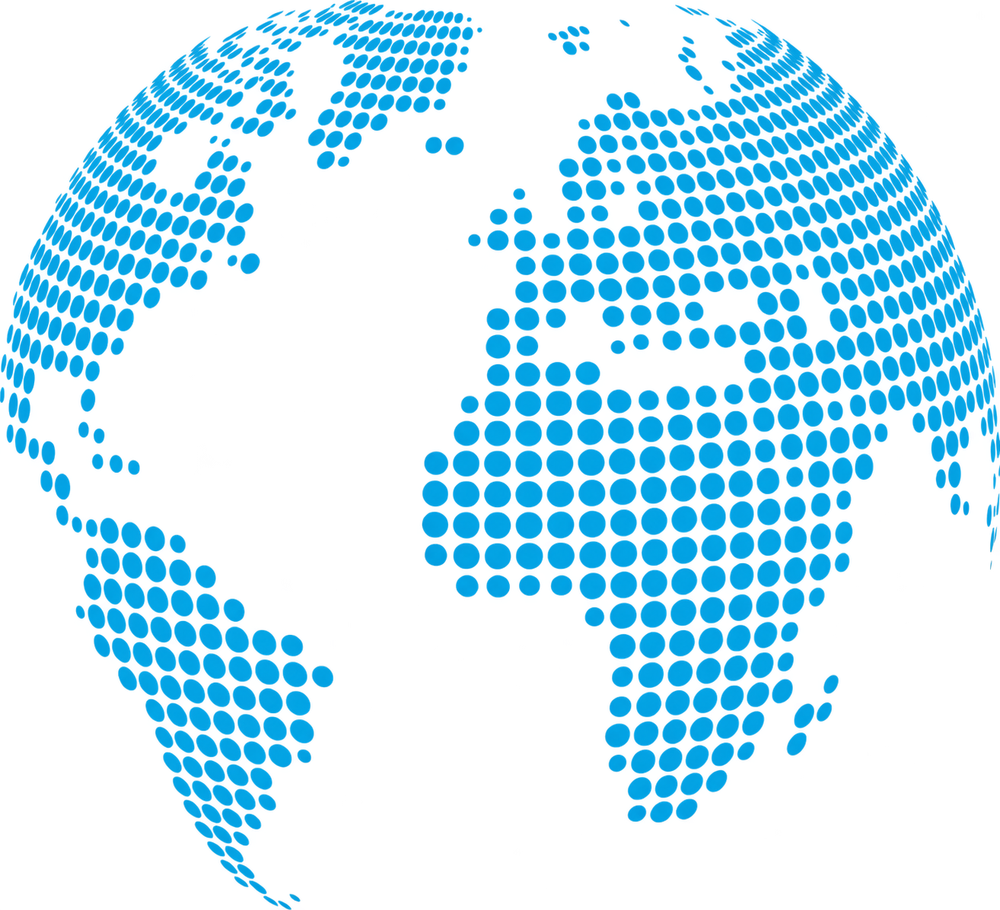
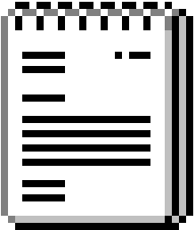
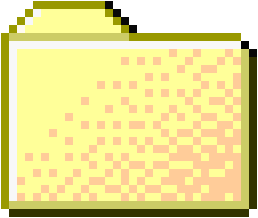
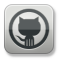

⢀⣴⠖⡿⠛⠑⣦⠀⠀⠀⠀⠀⠀⠀⠀⠀⣀⡠⠒⢦⠀⠀⢠⢾⠒⡤⣄⣀⡀⠀⠀⠀⠀⠀⠀⠀⠀⠀⠀⠀⢀⣀⢄⣀⠀⠀⠀⠀⠀⠀
⠀⠀⠀⠀⠀⠀⠀⠀⣏⣺⣼⣛⣤⣾⠟⠀⠀⠀⠀⠀⢀⡴⠒⢩⢧⣼⣿⣾⠃⠀⠸⣿⣿⡿⣶⣻⣘⡗⣤⣄⣀⠀⠀⠀⠀⢀⡤⢾⣍⠙⣦⡌⣳⠀⠀⠀⠀⠀
⠀⠀⠀⠀⠀⠀⠀⠀⢘⣿⣿⣿⣿⣧⡀⠀⠀⣀⡤⠒⣫⣶⣼⣿⣿⡿⠟⠁⠀⠀⠀⠈⠙⠿⢿⣿⣿⣿⣷⣌⠬⣑⣄⠀⠀⣾⣤⡀⣹⣦⣿⣷⣏⠀⠀⠀⠀⠀
⠀⠀⠀⣠⠖⠀⠒⢄⣞⣻⣿⣿⣿⣿⣷⣀⡜⠁⣰⣏⣻⣿⡿⠛⠉⠀⠀⠀⠀⠀⠀⠀⠀⠀⠀⠀⠉⢿⣿⣿⡻⢷⣮⣕⣦⣼⣿⣿⣿⣿⣿⣿⢿⡠⠤⢄⡀⠀
⠀⠀⠰⣿⢠⡄⠀⣠⡌⠹⢽⣿⡽⣾⣽⣧⣦⣾⢃⣿⣿⡟⠀⠀⠀⠀⠀⠀⠀⠀⠀⠀⠀⠀⠀⠀⠀⠈⠻⣿⣟⣳⣾⣿⣿⣿⣿⣿⣿⡿⠿⠛⠋⠀⠀⠄⣿⡄
⠀⠀⠀⠙⣿⣿⣰⡇⠀⣤⢨⣿⣿⣿⣿⣿⣿⣼⡟⣯⡟⠁⠀⠀⠀⠀⠀⠀⠀⠀⠀⠀⠀⠀⠀⠀⠀⠀⠀⠙⣿⣯⣻⢿⣿⣿⣿⢟⠙⠶⢦⣀⢣⣴⣸⣿⠟⠁
⠀⠀⠀⣀⣿⣿⣿⣿⣾⣷⣿⣿⣿⣿⣿⣿⢻⣱⣾⠟⠀⠀⠀⠀⠀⠀⠀⠀⠀⠀⠀⠀⠀⠀⠀⠀⠀⠀⠀⠀⠘⢿⣯⣿⣽⣿⣿⣖⣧⣀⣾⣧⣿⣿⣿⣇⠀⠀
⠀⢠⣿⠀⠈⢿⣿⣿⣿⣿⣿⣿⣿⢿⣹⣬⣷⣿⠋⠀⠀⠀⠀⠀⠀⠀⠀⠀⠀⠀⠀⠀⠀⠀⠀⠀⠀⠀⠀⠀⠀⠀⠛⢿⣿⣿⣿⣿⣿⣿⣿⣿⣿⣿⣷⣿⣷⠀
⠀⢸⣿⣀⠀⠈⣻⢿⣿⣿⣿⡿⣿⣾⣯⣿⡿⠋⠀⠀⠀⠀⠀⠀⠀⠀⠀⠀⠀⠀⠀⠀⠀⠀⠀⠀⠀⠀⠀⠀⠀⠀⠀⠈⠛⢿⣿⣿⣿⣿⣿⣿⣿⣿⠟⠋⠻⡄
⠀⣠⡿⣿⢱⡏⠈⠁⣹⣿⢿⣿⣿⡿⠟⠉⠀⠀⠀⠀⠀⠀⠀⠀⠀⠀⠀⠀⠀⠀⠀⠀⠀⠀⠀⠀⠀⠀⠀⠀⠀⠀⠀⠀⠀⠀⠘⢿⣿⣿⣿⡿⠟⠉⠀⢀⢲⣿
⠀⡟⠀⡿⢻⣷⣾⣷⣿⣿⣿⠟⠉⠀⠀⠀⠀⠀⠀⠀⠀⠀⠀⠀⠀⠀⠀⠀⠀⠀⠀⠀⠀⠀⠀⠀⠀⠀⠀⠀⠀⠀⠀⠀⠀⠀⠀⠸⡟⠫⠵⢦⣀⣳⣶⣿⣿⠏
⢰⠇⠘⢇⣿⣿⣿⣿⣯⡿⠋⠀⠀⠀⠀⠀⠀⠀⠀⠀ ⠀⠀⠀⠀⠀⠀⠀⠀⠀⠀⠀⠀⠀⢷⣷⣣⣾⣿⣿⣿⣿⠏⠀
⢸⠀⠀⣬⡟⠛⠛⠛⠋⠁⠀⠀⠀⠀⠀⠀⠀⠀⠀⠀⠀⠀⠀⠀⠀⠀⠀⠀⠀⠀⠀⠀⠀⠀⠀⠀⠀⠀⠀⠀⠀⠀⠀⠀⠀⠀⠀⠀⠀⠉⠉⣼⠟⢓⣾⡏⠀⠀
⢸⠂⢀⡾⠀⠀⠀⠀⠀⠀⠀⠀⠀⠀⠀⠀⠀⠀⠀⠀⠀⠀⠀⠀⠀⠀⠀⠀⠀⠀⠀⠀⠀⠀⠀⠀⠀⠀⠀⠀⠀⠀⠀⠀⠀⠀⠀⠀⠀⠀⣼⠃⡎⣼⠟⠀⠀⠀
⠻⠶⠟⠁⠀⠀⠀⠀⠀⠀⠀⠀⠀⠀⠀⠀⠀⠀⠀⠀⠀⠀⠀⠀⠀⠀⠀⠀⠀⠀⠀⠀⠀⠀⠀⠀⠀⠀⠀⠀⠀⠀⠀⠀⠀⠀⠀⠀⢠⢾⣁⣼⡟⠁⠀⠀⠀⠀
⠀⠀⠀⠀⠀⠀⠀⠀⠀⠀⠀⠀⠀⠀⠀⠀⠀⠀⠀⠀⠀⠀⠀⠀⠀⠀⠀⠀⠀⠀⠀⠀⠀⠀⠀⠀⠀⠀⠀⠀⠀⠀⠀⠀⠀⠀⠀⠀⣿⣈⡽⠋⠀⠀⠀⠀⠀⠀
⠀⠀⠀⠀⠀⠀⠀⠀⠀⠀⠀⠀
▄ ▄ ▀▀█
█ █ █ ▄▄▄ █ ▄▄▄ ▄▄▄ ▄▄▄▄▄ ▄▄▄
▀ █▀█ █ █▀ █ █ █▀ ▀ █▀ ▀█ █ █ █ █▀ █
██ ██▀ █▀▀▀▀ █ █ █ █ █ █ █ █▀▀▀▀
█ █ ▀█▄▄▀ ▀▄▄ ▀█▄▄▀ ▀█▄█▀ █ █ █ ▀█▄▄▀
⠀⠀⠀⠀⠀⠀⠀⠀⠀⠀⠀⠀⠀⠀⠀⠀⠀⠀⠀⠀⠀⠀⠀⠀⠀⠀⠀⠀⠀⠀⠀⠀⠀⠀ ⠀⠀⠀⠀⠀⠀⠀

about.txt
Projects
ToGithub.exeHi! My name is Radit
I am an active student at BINUS University, I have an interest in cybersecurity, it all started at highschool from watching the show Mr. Robot and playing a video game called Watch Dogs, which pushed me down the rabbit hole of learning how the cyber world actually works behind the scene.
Today, I am translating that curiosity into practical skills. I enjoy the challenge of understanding complex systems, identifying vulnerabilities, and finding creative ways to solve technical problems.
I am a continuous learner, always open to new challenges, emerging technologies, and hands on experiences.